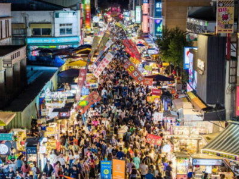
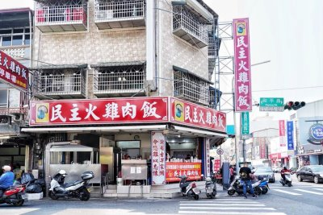
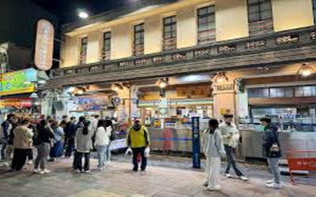

| 文化路夜市 | 民主火雞肉飯 | 林聰明砂鍋魚頭 | |
| 嘉義不只有豐富的人文景點與自然風光，也擁有許多令人難忘的在地美食，是一座充滿魅力的城市。無論是熱鬧的文化路夜市、香氣十足的火雞肉飯，還是遠近馳名的砂鍋魚頭，都展現出嘉義獨特的飲食文化與地方特色。許多遊客來到嘉義，除了欣賞風景與感受城市氛圍之外，也會特地安排美食之旅。透過品嚐這些經典小吃，更能認識嘉義的人情味與在地特色。 | |
文化路夜市
|
 |
|
火雞肉飯是嘉義最具代表性的美食，也是很多人來嘉義一定會吃的料理。香嫩的火雞肉絲鋪在白飯上，再淋上香氣十足的雞油與醬汁，味道簡單卻十分美味。許多火雞肉飯店從早上就開始營業，有些店甚至開到晚上，方便大家不同時間都能享用。火雞肉飯價格平價又有飽足感，不管是學生還是上班族都很喜歡。 |
 |
林聰明砂鍋魚頭 |
 |